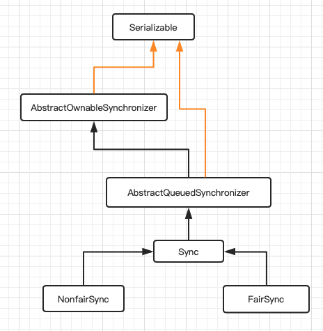

Lock详解
Lock
Lock 是java中的一个锁接口，在jdk1.5新增
synchronized 是内置锁，不需要手动释放
与synchronized不同，Lock需要手动获取锁，手动释放锁
而且Lock可以被设置为公平锁
而且Lock可以设置获取锁的超时时间
Lock的实现类 ReentrantLock
ReentrantLock还提供了Condition，对线程的等待和唤醒等操作更加灵活，一个ReentrantLock可以有多个Condition实例，所以更有扩展性;
ReentrantLock提供公平锁、非公平锁
继承关系图

非公平锁
ReentrantLock 默认为非公平锁
NonfairSync1
2
3
4
5
6
7
8
9
10
11
12
13
14
15
16
17
18
19
20static final class NonfairSync extends Sync {
private static final long serialVersionUID = 7316153563782823691L;
/**
* Performs lock. Try immediate barge, backing up to normal
* acquire on failure.
*/
// Android-removed: @ReservedStackAccess from OpenJDK 9, not available on Android.
// @ReservedStackAccess
final void lock() {
if (compareAndSetState(0, 1))
setExclusiveOwnerThread(Thread.currentThread());
else
acquire(1);
}
protected final boolean tryAcquire(int acquires) {
return nonfairTryAcquire(acquires);
}
}
在NonfairSync 获取锁时，先判断执行CAS操作是否能够成功，
如果成功将1设置到state上，那么此时锁没有被线程占用，
则会调用到AbstractOwnableSynchronizer中的setExclusiveOwnerThread函数1
2
3protected final void setExclusiveOwnerThread(Thread thread) {
exclusiveOwnerThread = thread;
}也就是把当前线程设为此锁的拥有者
如果执行CAS操作失败，就会执行 acquire(1); 会调用AbstractQueuedSynchronizer中的acquire
1
2
3
4
5public final void acquire(int arg) {
if (!tryAcquire(arg) &&
acquireQueued(addWaiter(Node.EXCLUSIVE), arg))
selfInterrupt();
}acquire会执行两个判断：
- tryAcquire
- acquireQueued
当两个判断都返回true时，则会调用selfInterrupt();自己中断自己
tryAcquire
在NonfairSync中，tryAcquire(1)会调用nonfairTryAcquire，
nonfairTryAcquire是Sync类中的函数1
2
3
4
5
6
7
8
9
10
11
12
13
14
15
16
17
18
19
20final boolean nonfairTryAcquire(int acquires) {
final Thread current = Thread.currentThread();
int c = getState();
if (c == 0) {
// 此处会尝试重新执行CAS操作 如果成功，则回到上面的操作
if (compareAndSetState(0, acquires)) {
setExclusiveOwnerThread(current);
return true;
}
}
else if (current == getExclusiveOwnerThread()) {
// 判断当前线程是否已经获取锁 可重入锁
int nextc = c + acquires;
if (nextc < 0) // overflow
throw new Error("Maximum lock count exceeded");
setState(nextc);
return true;
}
return false;
}
如上所示，tryAcquire其实就是再次判断state是否没有被占用 返回true，以及当前线程是否已经占有此锁 返回true，否则就返回false。
acquireQueued
acquireQueued(addWaiter(Node.EXCLUSIVE), arg))
此处arg = 1；
先查看addWaiter函数
addWaiter
1 | private Node addWaiter(Node mode) { |
addWaiter 方法采用了自旋非阻塞的方式进行了入队操作
在看一下完整的acquireQueued函数1
2
3
4
5
6
7
8
9
10
11
12
13
14
15
16
17
18
19
20
21
22final boolean acquireQueued(final Node node, int arg) {
try {
boolean interrupted = false;
for (;;) {
//获取当前节点的前驱节点
final Node p = node.predecessor();
//当前节点为第二个节点时,尝试获取锁
if (p == head && tryAcquire(arg)) {
setHead(node);
p.next = null; // help GC
return interrupted;
}
//判断是否可以挂起
if (shouldParkAfterFailedAcquire(p, node) &&
parkAndCheckInterrupt())
interrupted = true;
}
} catch (Throwable t) {
cancelAcquire(node);
throw t;
}
}
公平锁
当构造ReentrantLock实例时传入true，则为公平锁 FairSync
1 | static final class FairSync extends Sync { |
而看公平锁FairSync中的tryAcquire函数，多了一个判断 !hasQueuedPredecessors()
1 | public final boolean hasQueuedPredecessors() { |
总结
公平锁的lock方法在进行cas判断时多了一个hasQueuedPredecessors()方法，
它会在AQS队列中没有中没有线程的情况下才会申请锁，
而不像非公平锁一样，非公平锁一来不管AQS里是否有排队的线程就直接申请锁